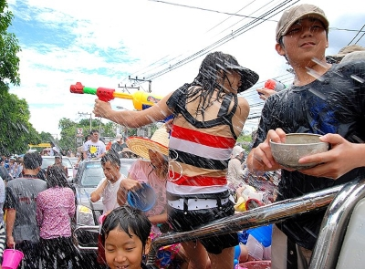
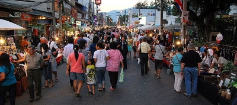

Chiang Mai
By Takeaway - Own work, CC BY-SA 3.0, Link
Above picture is a citywide water fight that happens yearly around Thailand called Songkran. This picture was taken in Chiang Mai.
By Takeaway - Own work, CC BY-SA 4.0, Link
A bustling market in Chiang Mai. Although I never served there, Chiang Mai is a very popular tourist town and houses many American expatriots.